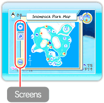
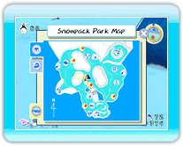
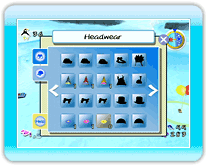
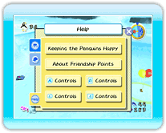

15 |
Pause Menu |
 |
|

Press *If you display the pause menu by pressing Snowpack Park Map This page displays a map of the park. Point to an icon to display the names of minigames and penguin-gathering locations, as well as other points of interest throughout the park. *If Headwear Throughout the game, you will be able to collect various hats and masks for the penguins to wear. On the headwear menu, the headwear pieces you have collected up to that point will be displayed.
You can change pages by pointing to ・Putting Headwear on a Penguin If you select a piece of headwear from the headwear menu, you will be holding it when you exit the menu. Stand next to a penguin while holding the headwear and press Help This section of the pause menu provides an explanation of penguin moods and a review of the controls for interacting with the penguins. |
 |
 |
 |